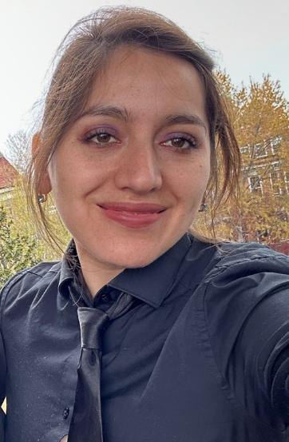

Maria Jose Velasco | WDD 130
My name is Maria Jose, I'm from San Miguel de los Bancos, I love to read and write, but most of all
I enjoy nature. I love camping and swiming. My bithday is in July and I am a Leo.
Finally, I have the desire to learn about compueters and tehcnology.